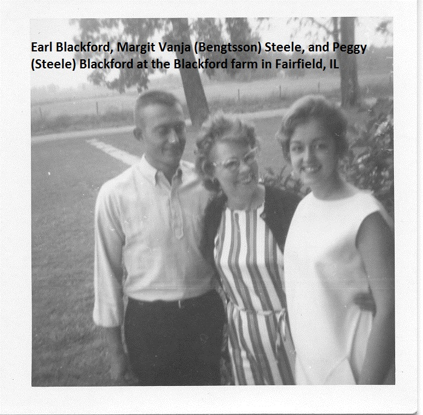
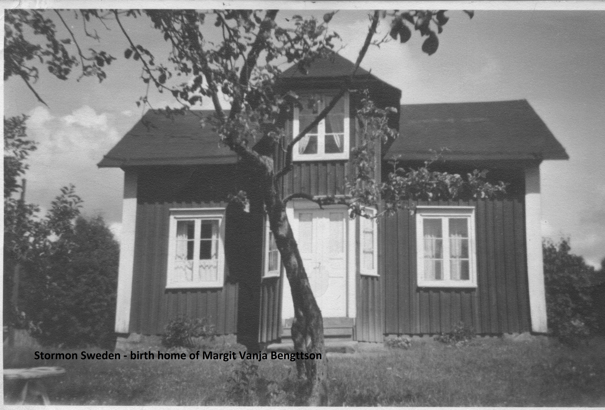
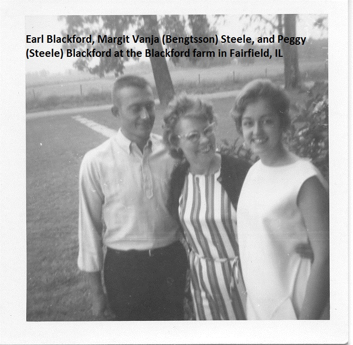
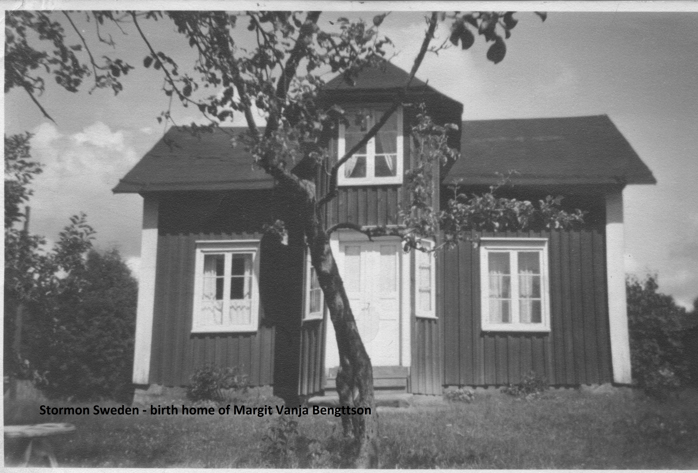

Margit Vanja Bengtsson was the oldest child of Agnes and Carl Bengtsson. They lived in Stormon Sweden until immigrating to the United States in 1907. While in America the family grew.
Siblings:
Francis Hedvig Benson 1907-2001
Eric Birger Benson 1909-1953
Florence Sigrid Benson 1912-1934
Holger Carl Benson 1913-1979
Henry Albert Benson 1917-1973
Harold Ejnar Benson 1917-1973
Robert Philip Benson 1919 - 2016
Lillian Isabelle Benson 1922 - 2009
Carl, on his trips back to Sweden, had another son, Nils Carlson
Children:
 


